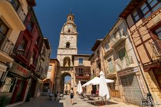

TORO

Localización
Geografía
Historia
Naturaleza
Cultura
Tradiciones
Localización
Toro es un municipio y ciudad española perteneciente a la provincia de Zamora, en la comunidad autónoma de Castilla y León.
Geografía
Su término se encuentra situado al sureste de la provincia de Zamora, en plena vega del Duero, a unos 33 km de Zamora, la capital provincial. Cuenta con una extensión total de 324,86 km, dato que sitúa a este municipio como el de mayor superficie de su provincia, al ocupar algo más de un 3 % de su territorio, y uno de los mayores de Castilla y León. Administrativamente está formado por el núcleo que le da nombre, Toro, y por una serie de asentamientos de diferente carácter, como son el pequeño núcleo rural, con tratamiento de barrio, llamado Tagarabuena, la urbanización denominada El Gejo, y seis asentamientos menores como son La Estación, Montelareina, Granja Florencia, Villaveza, Villaguer y Estancia Piedra.
Toro es una ciudad histórica y monumental. La ciudad es reflejo de su notable papel histórico, de especial relevancia entre los siglos XII y XVI, en la que fue sede real y lugar de celebración de Cortes. Su casco histórico acoge auténticas joyas monumentales, entre las que destaca la Colegiata de Santa María la Mayor. En sus calles se percibe la imbricación de distintas etapas de su desarrollo histórico, siendo aún identificable la traza y los elementos clave de la estructura urbana fundacional, junto con el de otras etapas posteriores de su desarrollo. Otro de los elementos clave en la configuración de su estructura urbana es su emplazamiento sobre un accidente orográfico significativo, consistente en una considerable elevación del terreno y su ubicación próxima al Duero.
La ciudad ejerce una notable función de cabecera comarcal sobre un área rural circundante de 19 municipios, el denominado Alfoz de Toro, de los que 13 están situados al norte del río Duero y 6 al sur. Por su tamaño, es un núcleo intermedio, con un volumen de población significativo para la media de Castilla y León y que contribuye decisivamente con sus cerca de 9000 habitantes a aproximar la densidad comarcal a la que existe en el conjunto regional, cumpliendo su papel de cabeza de comarca de su área funcional.
El río Duero se configura como el elemento central del relieve y la morfología del municipio, atravesando el término de este a oeste. El río ha ejercido un drenaje espectacular del territorio de su amplio valle, que en algunos puntos puede superar los 6 km de anchura, determinando su particular fisonomía de terrazas, laderas, abarrancamientos y fondos de valle. El municipio se extiende por encima y debajo del río, con tierras principalmente cubiertas de viñedos, con las que se ha generado una cultura vitícola de alta calidad que se ha protegido con la Denominación de Origen Toro. A pesar de que su suelo cuenta con una alta ocupación por actividades agrícolas, el territorio municipal presenta importantes áreas protegidas que incluyen un lugar de importancia comunitaria (LIC), una zona húmeda catalogada y un monte de utilidad pública (MUP).
Historia
Edad Antigua
Existen diversas teorías sobre el primigenio asentamiento humano en el actual solar de la ciudad de Toro. De ellas la más aceptada se basa en el conjunto de piezas o vestigios arqueológicos de origen celtíbero que, según señala Navarro Talegón en su «Catálogo monumental de Toro y su alfoz», «patentizan la existencia de un castro que posiblemente se corresponda con la antigua ciudad vaccea citada por el geógrafo y astrónomo griego Ptolomeo» y que otro historiador mucho más reciente, Gómez-Moreno, «hizo coincidir» con la Arbocela del «Itinerario de Antonino» -recopilación de rutas del Imperio Romano-, situada en la calzada de Mérida a Astorga y Zaragoza, en el ramal de esta última que parte de Ocelu Duri. Una población que, según Navarro Talegón, cabe identificar con la «Arbocala», cuya conquista por Aníbal es mencionada por Tito Livio en sus «Décadas». De esa época sería uno de los principales símbolos actuales de la ciudad, el denominado verraco, un toro de granito que fue hallado en la ciudad por los repobladores cristianos en tiempos del Alfonso III de Asturias y que para muchos dio su actual nombre a la ciudad.
Más incierta es la presencia romana en la ciudad. El testimonio más evidente de esta época es el puente mayor sobre el río Duero, aunque su reconstrucción —casi por completo— de finales del siglo XII o principios del XIII han dejado muy pocos sillares almohadillados de fábrica romana. Los restos arqueológicos más abundantes fueron localizados en Tagarabuena, pedanía situada a un kilómetro de Toro. Las escasas huellas romanas, visigodas y musulmanas han llevado a que algunos historiadores defiendan que el primer asentamiento vacceo desapareció tras la conquista de Aníbal y que de existir alguna población, sería insignificante
Edad Media
Leovigildo, rey de los visigodos, organizó en 573 una campaña contra los suevos, en la que estos últimos fueron derrotados en sucesivas ocasiones. El resultado final fue la sumisión del rey Miro a la supremacía visigoda, convirtiéndose en un federado de su corona. Además algunos autores indican que el rey visigodo también fundó «Villa Gothorum», la actual ciudad de Toro, a fin de usarla como baluarte contra los suevos y como lanzadera de la ocupación de lo que se denominó «Campi Gothorum» (Tierra de Campos). Sin embargo, otros autores defienden que dicha refundación no tuvo lugar y que la actual ciudad de Toro no fue ocupada en el período que va desde el abandono del primitivo castro celtíbero hasta su refundación en la época de la repoblación de finales del siglo IX, por lo que seguramente formó parte del denominado Desierto del Duero, que fue repoblado como bastión leonés.
El año 899 es conocido en la historia de Toro como el de la repoblación de la ciudad. Así lo atestiguó el cronista del rey Alfonso III de Asturias, el obispo Sampiro. La refundación, ya con el nombre de Toro, se realizó de la mano del infante don García con gentes de procedencia diversa, entre los que destacan grupos de mozárabes provenientes del sur —tal y como evidencian ciertas advocaciones de algunas parroquias y algunos fustes y capiteles de mármol— e incluso por mudéjares que en su mayor parte fueron mano de obra en la edificación de las diversas fortificaciones. Junto a ellos participaron gentes del norte, principalmente asturianos, vascones y navarros. A esta época pertenece la estructura primigenia de la ciudad y algunos de sus elementos patrimoniales más significativos, como son el primer recinto amurallado y el alcázar. La ciudad se concibió con las típicas características de las villas de repoblación de la época, potenciadas por su clara posición estratégica y defensiva entre los reinos cristiano y musulmán. Dicha posición estratégica le facilitó que adquiriera de forma rápida una notable relevancia, y con ello un importante desarrollo urbano.
La repoblación de Toro resultó imprescindible para la consolidación cristiana al norte del Duero. Como consecuencia, durante el siglo X recibió diferentes ataques de los gobernantes de Al-Ándalus. Sin embargo, las fuentes cristianas e islámicas silencian el nombre de Toro en relación a estas aceifas. Hacia 974, ya en el reinado de Ramiro III de León, Toro era considerada como cabecera de su comarca, el «Campo de Tauro».
La desintegración del califato cordobés produjo un periodo de estabilidad a comienzos del siglo XI. Esta situación fue aprovechada por Fernando I de León (1016-1065) para reorganizar la ciudad de Toro y por nuevos pobladores —provenientes del norte— que se asentaron en la ciudad, aunque de esta información tampoco hay datos precisos. Este monarca legó el señorío de Toro a su hija Elvira, pero su hermano, y primogénito, Sancho, no tardó en incorporar dicho señorío a sus territorios, donde los retuvo hasta su asesinato a las puertas de Zamora, volviendo de nuevo a manos de Elvira.
A partir del siglo XII la ciudad se convirtió en un centro de poder político, religioso y militar. Su nuevo rol, supuso una notable transformación urbana, dado que los distintos centros de poder acapararon los espacios más representativos de la pujante ciudad. En este sentido, el poder militar se articuló en torno a la plaza del Alcázar, el poder civil municipal en la plaza Mayor y el religioso construyó a partir de 1160 la colegiata de Santa María la Mayor y se reservó el espacio público previo. Su creciente importancia aumentó de forma decisiva tras la muerte del rey Alfonso VII de León, también llamado «el Emperador», como consecuencia de la separación de los reinos de León y Castilla, reforzando su papel de plaza fronteriza bajo las políticas del reino de León. Como consecuencia, la ciudad creció con nuevos asentamientos extramuros que dieron paso a la construcción de una segunda cerca, la «cerca del arrabal», que fue iniciada hacia el 1208, ya bajo el reinado de Alfonso IX de León.
Con el siglo XIII se inició la etapa de mayor esplendor de la ciudad de Toro, en la que la sociedad civil se centró en la actividad comercial, abandonando progresivamente la militar. Se considera que el detonante de esta tendencia fue la promulgación del primer fuero de la villa, otorgado en 1222 por Alfonso IX de León. Este hito supuso el despegue de algunas de las actividades que sustentan actualmente la economía toresana, como son la horticultura o el viñedo. Durante esta época el poder religioso mantuvo su cuota de poder —debido a los notables beneficios económicos que aportaba a la monarquía—, la nobleza se posicionó en un protagonismo de primer orden y se implantaron las instituciones civiles del alcalde o el juez. Como consecuencia, la ciudad de Toro fue escenario de numerosos acontecimientos y sucesos históricos. De esta época destaca la figura de María de Molina, precursora de algunos de los principales monasterios de la ciudad, como el de San Ildefonso o el de Sancti Spiritus el Real.
En el siglo XIV se desarrolló aún más la actividad comercial y artesana en Toro. De esta forma, se creó una diversidad de oficios y actividades que se agruparon por gremios en calles (de Hornos, Candeleros, Odreros o la Plata) y plazas (de las Uvas, de la Paja o de Bollos). El impulso económico también contó con el respaldado de la corona, al conceder al concejo de Toro una feria franca que se celebró en los quince días siguientes a la virgen de agosto y que actualmente se conoce como «Ferias y Fiestas de San Agustín». Este notable empuje económico dejó su impronta en la estructura urbana de la ciudad, siendo su mejor ejemplo los numerosos monasterios, conventos, hospitales y viviendas señoriales que se construyeron.
A finales de la Edad Media la ciudad era uno de los principales núcleos urbanos de la Corona de Castilla, por lo que formó parte del grupo de dieciocho ciudades que podían enviar procuradores con derecho a voto en las Cortes de Castilla, estatus que fue germen de la posterior provincia de Toro. Esta fue una época en la que se acusó una cierta pérdida de poder de la corona en beneficio de la nobleza. En este contexto, la posición estratégica de Toro terminó situándola en un primer plano de la Guerra de Sucesión Castellana, siendo finalmente escenario de la batalla de Toro el 1 de marzo de 1476 entre los partidarios de la princesa Doña Juana (llamada por sus adversarios «la Beltraneja»), y los seguidores de su tía y futura reina Isabel (conocida como «la Católica»).
Historia moderna
La expulsión de los judíos de España de 1492 afectó de lleno a Toro que contaba con el barrio de la Judería en la zona este de la ciudad. En 1505 se reunieron en Toro las Cortes de Castilla para cumplir con dos importantes hechos: confirmar el testamento otorgado por la reina difunta, por el que se proclamaba reina de Castilla y heredera de todos sus reinos y tierras a su hija doña Juana (que con ello pasaba a ser la reina Juana I), y se promulgaba un ordenamiento conocido como las Leyes de Toro que habían sido redactadas poco antes del fallecimiento de la reina Isabel. Las Leyes de Toro se promulgaron el 7 de marzo de 1505 y recogen un total de 83 leyes que resolvían múltiples cuestiones relacionadas especialmente con el derecho civil.
El inicio del siglo XVI fue convulso, siendo un claro ejemplo el levantamiento armado de los comuneros y la consiguiente guerra de las Comunidades de Castilla. Durante este conflicto Toro se unió a las filas comuneras, aunque sin incidentes como en otros lugares. Y extrañamente, la ciudad contó al principio de la revuelta con dos corregidores: el doctor Valdivielso, nombrado por los comuneros, y Carlos de Guevara, que intentaba en lo posible vigilar que la situación de la ciudad no se le fuese de las manos. Finalmente, este último debió abandonar Toro el 15 de enero de 1521, en el plazo de una hora, bajo la amenaza de ser condenado a muerte.
Desde un punto de vista urbanístico, la ciudad mantuvo una línea continuista de crecimiento, en el que destacan las numerosas fundaciones religiosas, provocadas por la llegada de Carmelitas, Mercedarios Calzados, Agustinos o los Canónigos Regulares de San Antonio Abad, que se completarían durante el siguiente siglo con la llegada de nuevas órdenes como los Capuchinos y los Franciscanos Descalzos. De esta época es ejemplo el grabado que el dibujante paisajista flamenco Anton van den Wyngaerde dedicó a Toro y en el que se ve que el paraje de «Las Barranqueras» —actualmente arrasado— tenía un buen número de iglesias que han podido corroborarse desde un punto de vista arqueológico cuatro siglos más tarde.
El siglo XVII marcó una clara tendencia de decadencia política y social en la ciudad de Toro, cuyo origen subyace en la derrota de Villalar y en la consiguiente creación del Estado centralista y oligárquico impuesto por la monarquía. La situación provocó un empobrecimiento de la ciudad que se fue acusando con el paso de los años, pasando de ocupar una posición de privilegio a reducirse a ser un pueblo más de la corona. Como consecuencia Toro sufrió una sangría demográfica —el censo pasa de los cerca de 4000 habitantes de 1591 a los no más de 800 de comienzos del siglo XVII— y una reruralización en la que su economía se basó en su pujante sector primario, con el cereal y el vino al frente. La ciudad fue descrita en la novela picaresca “El donado hablador, vida y aventuras de Alonso, mozo de muchos amos” (1624) del médico y escritor murciano Jerónimo de Alcalá. El capítulo quinto del libro, al narrar las andanzas de Alonso en Toro, la describe de la siguiente forma:
"... la ciudad de Toro, una de las mejores que hay en Castilla la Vieja: abundante, rica, bien cercada, amigable sitio, famosa por su caudaloso y soberbio río, con quien vienen acompañados otros seis, que todos siete fertilizan la tierra y dan gran número de pesca a los naturales y extranjeros; demás por la gran cosecha que tiene de pan y vino y tanta diversidad de frutas, con que provee a muchos lugares y ciudades del reino: tanta es la abundancia que en ella se coge."
El retorno a las actividades tradicionales permitió que la ciudad recuperara paulatinamente el pulso económico. La agricultura siempre fue el motor económico de la villa, destacando las importantes rentas que proporcionaban los viñedos y la producción de vino, incluso en aquellas épocas caracterizadas por la inestabilidad del mercado de cereales. Como consecuencia, la ciudad fue recobrando su posición económica y demográfica, viendo con ello una nueva etapa de esplendor que se vio reconocido cuando en 1749 asumió los partidos de Carrión y Reinosa como capital de la provincia de Toro. De esta época son el Ayuntamiento, la Torre del reloj, el Hospital General de Nuestra Señora de las Angustias y numerosas obras públicas, a las que se unió el incremento de otras actividades económicas en la ciudad al asentarse en ella un buen número de artesanos y artistas.
El "Diccionario Geográfico" de 1763 describía a la ciudad de Toro del siguiente modo: Toro, Taurus, antigua, y considerable Ciudad de España en el Reyno de Leon, famosa por la batalla en que los Portugueses fueron derrotados por Don Fernando el Catholico, y auyentado el Rey de Portugal Don Alonso V en 1476, y por sus generosos vinos. No es tan considerable como en otro tiempo. Se han celebrado en ella Cortes em varias ocasiones, y en algunas de estas se establecieron las famosas Leyes de Toro. Es patria del Rey Don Juan el Segundo de Castilla, y de otros hombres ilustres. Tiene una insigne Colegiata, que antiguamente fue Cathedral, y se trasladó a Zamora. Está en la ribera derecha del Duero, donde tiene un gran puente, al fin de una llanura hermosa, y fértil.
Historia contemporánea
La bonanza económica se ve truncada a principios del XIX, especialmente tras la división territorial de España en 1833, en la que Toro pierde la capitalidad de provincia y pasa a integrarse como una localidad más de la provincia de Zamora, dentro de la Región Leonesa. La situación de declive se ve acrecentada por los diversos brotes de plagas en las cosechas y las excesivas cargas tributarias a las que estaba sometida. El estancamiento del sector primario dará paso a una sociedad basada en el comercio y la industria, junto con la aparición de algunos elementos más característicos de la ciudad moderna, como la travesía de la carretera Zamora-Tordesillas, que supuso una mejora sustancial de la comunicación de la ciudad y que posteriormente se vio complementada con la llegada del ferrocarril y la construcción del puente de hierro. De esta época son también los primeros grandes espacios públicos contemporáneos -como la plaza de San Francisco o los Paseos del Carmen y del Espolón- y nuevos equipamientos como el cementerio, el mercado, el teatro Latorre o la plaza de toros, entre otros.
La descrita situación de declive, en comparación con la grandeza pasada, fue recogida por el francés Alexandre de Laborde en 1809 en su "Itinerario descriptivo de las provincias de España" (traducida al español en 1816), donde daba la siguiente descripción de la ciudad: Toro, ciudad situada en el extremo de una llanura sobre un collado eminente por cuya falda pasa el río Duero. Contiene 21 parroquias, 14 conventos de ambos sexos, 3 hospitales, y algunos quarteles, todo lo qual manifiesta la grandeza que tuvo en otro tiempo, hallándose en el día reducida a unos 7500 habitantes. Sus calles son hermosas; pero hay poca policía. Tiene 4 puertas principales, y un delicioso paseo llamado el Espolón. Esta ciudad se hizo célebre por haberse formado en ella las famosas Leyes llamadas de Toro; y por las cortes que en ella se han celebrado muchas veces. No lo es menos por la completa victoria que en sus inmediaciones consiguió D. Fernando el Católico contra Alfonso Vº rey de Portugal, en el año 1476.
A mediados del siglo XX se inicia una nueva etapa de recuperación económica, derivada en gran medida de la llegada de los canales de riego -canales de Toro y San José- y la consiguiente optimización de los regadíos. Surgen las primeras estructuras industriales importantes relacionadas con la agricultura, como los silos del Servicio Nacional de Trigo, la Azucarera o la Granja Florencia. Por el contrario, durante esta centuria se produjo la decadencia ciertas actividades económicas tradicionales como la alfarería, de las que llegaron a coexistir hasta treinta alfares a comienzos de siglo, siete tras la Guerra Civil y una durante las últimas décadas del siglo y hasta su desaparición en la primera década del siglo XXI. También se construyen las primeras promociones de vivienda -obra sindical- y con ellos los barrios de Eusebio Rebolledo, Francisco Temprano y el Carmen, junto con los primeros equipamientos periféricos. La pérdida de funcionalidades del centro histórico conlleva su última transformación, adaptándolo a un papel más asociado al de recurso turístico y comercial.
Naturaleza
El término municipal de Toro cuenta con varios espacios protegidos, como son el LIC «Riberas del río Duero y afluentes» (ES4170083), la laguna de «Castrillo» (ZA24) y el monte de utilidad pública «El Pinar» (MUP 49146).
Cultura
La ciudad de Toro cuenta con una notable presencia de recursos culturales y patrimoniales que le valieron la declaración de Conjunto histórico-artístico por Decreto de 24 de octubre de 1963.
Además cuenta con un buen número de edificaciones que por su singularidad y extraordinario valor han sido declaradas Bienes de Interés Cultural, o bien iniciado sus procesos de declaración a través de la incoación del expediente correspondiente. Se trata de 11 edificaciones y el puente histórico de la ciudad, todos ellos con la categoría de monumento:
Alcázar de la Ciudad de Toro es la edificación más antigua de la ciudad, junto con los restos de la primera cerca de la ciudad. Se trata de una arquitectura fortificada, construida en el siglo X, de forma rectangular con siete cubos macizos situados en las esquinas y en la parte media de cada lienzo, a la que se debería añadir una torre del homenaje demolida en el siglo XIX. El Alcázar es una construcción de cal y canto rodado, con sus caras chapadas de piedra caliza.
Colegiata de Santa María la Mayor, del siglo XII (que a su vez cuenta con el Pórtico de la Majestad), rómanica y gótica. En la sacristía está el famoso cuadro de la Virgen de la mosca (siglo XVI), así como un Calvario de marfil único en España y una custodia de plata que estuvo en Londres hasta hace muy pocos años.
Monasterio de Sancti Spiritus el Real. En él se encuentra el Museo de Arte Sacro de Toro, donde se encuentra una colección única de sargas policromadas siglo XVI, con escenas de la Pasión tomadas de estampas italo-flamencas de grandes dimensiones. La principal obra de arte del monasterio es el sarcófago mausoleo de Beatriz de Portugal, reina consorte de Castilla y León. Del inmueble también destaca su coro, iglesia, claustro, sala capitular y refectorio, entre otros.
También tiene que señalarse como Bienes de Interés Cultural, atendiendo a las declaraciones genéricas, la primitiva cerca de la ciudad, con las puertas que se mantienen en pie, especialmente la puerta de Mercado, así como el importante conjunto de blasones que jalonan buena parte de la arquitectura noble de la ciudad.
La presencia de una arquitectura palacial, vinculada a la nobleza es también característica de la ciudad, con una abundancia de arquitectura especialmente de los siglos XVI y XVII, época de esplendor de la ciudad. Todo el conjunto de palacios y casas solariegas son el ejemplo más destacado de la arquitectura civil de la ciudad, entre las que se debe destacar: el palacio de los Ulloa, el palacio de los marqueses de Santa Cruz de Aguirre, el palacio de los marqueses de Alcañices, el palacio de los Condes de Catre, el palacio de los Monsalve, el palacio de la Nunciatura (Solar de los Manso), el palacio de los marqueses de Mota y condes de Villalonso, el palacio de los marqueses de San Miguel de Gros (casa de las Bolas), el palacio de Ruiz Pazuengo, el palacio de Salazar y Montalvo, el palacio de Verdenoso, el palacio de Samaniego, el palacio de Fonseca, el palacio de Frontaura y Victoria, el palacio de los marqueses de Valparaíso (Vivero), el palacio de los condes de Fuentesaúco (Deza y Águila), el palacio de Amavizcar, el palacio de López, o el palacio de Zapata.
Existe además una importante muestra de arquitectura religiosa, representada especialmente por el conjunto de iglesias mozárabes del siglo XII y XIII, y la presencia de importantes conjuntos conventuales y monásticos de la ciudad, entre los que destacan el monasterio de Santa Sofía, la iglesia de San Julián de los Caballeros o la iglesia de Santo Tomás Canturianense.
Todos estos elementos, junto con unos magníficos ejemplos de arquitectura popular conforman un patrimonio abundante y de extraordinario valor, que en muchos casos forman parte del catálogo de elementos protegidos, como puede ser el caso del hospital de la Cruz o el Arco del reloj. Pero además, junto a este patrimonio edificado, la ciudad cuenta con un importante patrimonio arqueológico, que muestran el origen celtíbero de la ciudad y su relación con el pueblo vacceo que dominó estas tierras. De esta época data uno de los principales símbolos de la ciudad, el denominado "verraco", un toro de granito hallado en la ciudad y que, probablemente, sea el origen del actual nombre de la ciudad.
La película española de 1985 Los paraísos perdidos se rodó principalmente en Toro y aparecen muchos de estos entornos históricos, presentando casi un documento de ese año.
Tradiciones
La ciudad de Toro muestra un rico legado relacionado con el arte, la historia, la gastronomía y el vino, que han dado lugar a un conjunto de tradiciones y festividades que, en algunos casos, han sido objeto de reconocimiento como «Fiesta de Interés Turístico Regional», como son los carnavales, la Semana Santa y la vendimia. Entre las principales festividades que se celebran en esta ciudad, destacan por su importancia y popularidad las de:
Enlaces a algunas páginas de interes:
